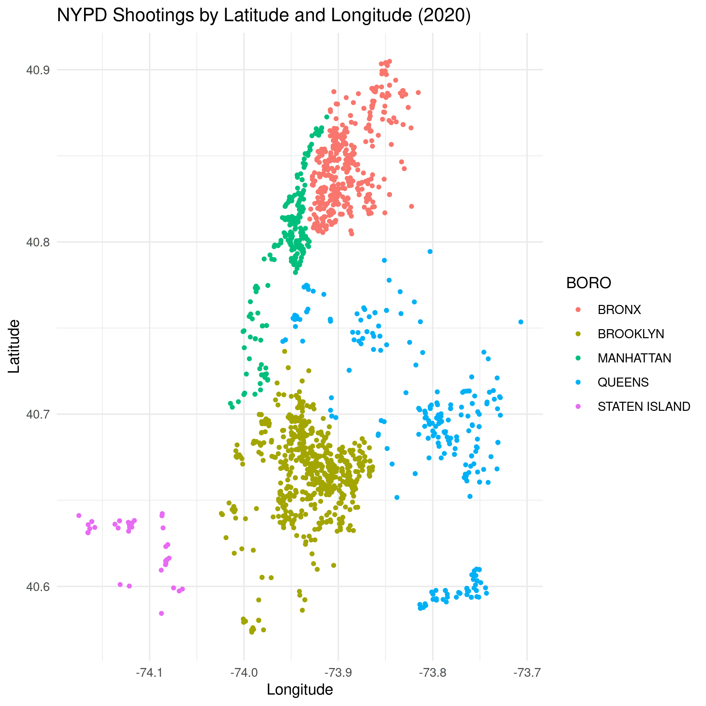

NYPD Shooting Incident Data
Table of Contents
NYPD Shooting Incident Data
This is a project that looks at the NYPD Shooting Incident Data (Historic) from the DATA.gov catalog of datasets. This dataset lists every shooting incident in New York City from 2006 through the end of the previous calendar year. It is compiled by NYC Open Data and was last updated on December 11, 2021.
Each row in the data is a "shooting incident" and there are 19 columns.
Loading the Data
library(assertthat)
library(knitr)
library(lubridate)
library(tidyverse)
Lubridate is part of the tidyverse but it has to be loaded for some reason.
DATA_URL <- "https://data.cityofnewyork.us/api/views/833y-fsy8/rows.csv?accessType=DOWNLOAD"
data = read_csv(DATA_URL)
[1mindexed[0m [32m0B[0m in [36m 0s[0m, [32m0B/s[0m
[1mindexed[0m [32m393.21kB[0m in [36m 0s[0m, [32m983.15kB/s[0m
[1mindexed[0m [32m524.28kB[0m in [36m 1s[0m, [32m1.03MB/s[0m
[1mindexed[0m [32m655.36kB[0m in [36m 1s[0m, [32m1.22MB/s[0m
[1mindexed[0m [32m786.43kB[0m in [36m 1s[0m, [32m1.24MB/s[0m
[1mindexed[0m [32m917.50kB[0m in [36m 1s[0m, [32m1.23MB/s[0m
[1mindexed[0m [32m1.05MB[0m in [36m 1s[0m, [32m1.18MB/s[0m
[1mindexed[0m [32m1.18MB[0m in [36m 1s[0m, [32m1.18MB/s[0m
[1mindexed[0m [32m1.31MB[0m in [36m 1s[0m, [32m1.06MB/s[0m
[1mindexed[0m [32m1.44MB[0m in [36m 2s[0m, [32m947.54kB/s[0m
[1mindexed[0m [32m1.57MB[0m in [36m 2s[0m, [32m1.00MB/s[0m
[1mindexed[0m [32m1.70MB[0m in [36m 2s[0m, [32m1.04MB/s[0m
[1mindexed[0m [32m1.83MB[0m in [36m 2s[0m, [32m1.04MB/s[0m
[1mindexed[0m [32m1.97MB[0m in [36m 2s[0m, [32m1.02MB/s[0m
[1mindexed[0m [32m2.10MB[0m in [36m 2s[0m, [32m1.03MB/s[0m
[1mindexed[0m [32m2.23MB[0m in [36m 2s[0m, [32m994.69kB/s[0m
[1mindexed[0m [32m2.36MB[0m in [36m 2s[0m, [32m965.18kB/s[0m
[1mindexed[0m [32m2.49MB[0m in [36m 3s[0m, [32m939.81kB/s[0m
[1mindexed[0m [32m2.62MB[0m in [36m 3s[0m, [32m951.26kB/s[0m
[1mindexed[0m [32m2.75MB[0m in [36m 3s[0m, [32m919.65kB/s[0m
[1mindexed[0m [32m2.88MB[0m in [36m 3s[0m, [32m855.66kB/s[0m
[1mindexed[0m [32m3.01MB[0m in [36m 3s[0m, [32m892.99kB/s[0m
[1mindexed[0m [32m3.15MB[0m in [36m 3s[0m, [32m904.11kB/s[0m
[1mindexed[0m [32m3.28MB[0m in [36m 4s[0m, [32m867.67kB/s[0m
[1mindexed[0m [32m3.41MB[0m in [36m 4s[0m, [32m878.71kB/s[0m
[1mindexed[0m [32m3.54MB[0m in [36m 4s[0m, [32m888.47kB/s[0m
[1mindexed[0m [32m3.67MB[0m in [36m 4s[0m, [32m899.43kB/s[0m
[1mindexed[0m [32m3.80MB[0m in [36m 4s[0m, [32m846.12kB/s[0m
[1mindexed[0m [32m3.93MB[0m in [36m 5s[0m, [32m861.49kB/s[0m
[1mindexed[0m [32m4.06MB[0m in [36m 5s[0m, [32m876.08kB/s[0m
[1mindexed[0m [32m4.19MB[0m in [36m 5s[0m, [32m854.40kB/s[0m
[1mindexed[0m [32m4.33MB[0m in [36m 5s[0m, [32m877.77kB/s[0m
[1mindexed[0m [32m4.46MB[0m in [36m 5s[0m, [32m855.56kB/s[0m
[1mindexed[0m [32m4.59MB[0m in [36m 5s[0m, [32m865.02kB/s[0m
[1mindexed[0m [32m4.72MB[0m in [36m 6s[0m, [32m855.32kB/s[0m
[1mindexed[0m [32m4.85MB[0m in [36m 6s[0m, [32m847.74kB/s[0m
[1mindexed[0m [32m4.98MB[0m in [36m 6s[0m, [32m870.08kB/s[0m
[1mindexed[0m [32m5.11MB[0m in [36m 6s[0m, [32m892.61kB/s[0m
[1mindexed[0m [32m5.11MB[0m in [36m 6s[0m, [32m892.93kB/s[0m
[1mindexed[0m [32m1.00TB[0m in [36m 6s[0m, [32m174.56GB/s[0m
[1mRows: [22m[34m23585[39m [1mColumns: [22m[34m19[39m
[36m──[39m [1mColumn specification[22m [36m──────────────────────────────────────────────────────────────────────────────[39m
[1mDelimiter:[22m ","
[31mchr[39m (10): OCCUR_DATE, BORO, LOCATION_DESC, PERP_AGE_GROUP, PERP_SEX, PERP_R...
[32mdbl[39m (7): INCIDENT_KEY, PRECINCT, JURISDICTION_CODE, X_COORD_CD, Y_COORD_CD...
[33mlgl[39m (1): STATISTICAL_MURDER_FLAG
[34mtime[39m (1): OCCUR_TIME
[36mℹ[39m Use [30m[47m[30m[47m`spec()`[47m[30m[49m[39m to retrieve the full column specification for this data.
[36mℹ[39m Specify the column types or set [30m[47m[30m[47m`show_col_types = FALSE`[47m[30m[49m[39m to quiet this message.
Tidying and Transforming the Data
spec(data)
cols( INCIDENT_KEY = [32mcol_double()[39m, OCCUR_DATE = [31mcol_character()[39m, OCCUR_TIME = [34mcol_time(format = "")[39m, BORO = [31mcol_character()[39m, PRECINCT = [32mcol_double()[39m, JURISDICTION_CODE = [32mcol_double()[39m, LOCATION_DESC = [31mcol_character()[39m, STATISTICAL_MURDER_FLAG = [33mcol_logical()[39m, PERP_AGE_GROUP = [31mcol_character()[39m, PERP_SEX = [31mcol_character()[39m, PERP_RACE = [31mcol_character()[39m, VIC_AGE_GROUP = [31mcol_character()[39m, VIC_SEX = [31mcol_character()[39m, VIC_RACE = [31mcol_character()[39m, X_COORD_CD = [32mcol_double()[39m, Y_COORD_CD = [32mcol_double()[39m, Latitude = [32mcol_double()[39m, Longitude = [32mcol_double()[39m, Lon_Lat = [31mcol_character()[39m )
Incident Key
According to the Data Description the "Incident Key" is a randomly generated identifier for the incident. This is a likely candidate to remove unless we look at specific incidents.
Occur Date
This is the date that the shooting happened. It was loaded as a string so we should convert it to a date.
data$OCCUR_DATE[1]
[1] "08/27/2006"
data$DATE <- as.Date(data$OCCUR_DATE, format="%m/%d/%Y")
str(data$DATE)
data$DATE[1]
assert_that(noNA(data$DATE))
Date[1:23585], format: "2006-08-27" "2011-03-11" "2019-10-06" "2011-09-04" "2013-05-27" ... [1] "2006-08-27" [1] TRUE
Occur Time
This is the time of the shooting. It appears to have already been read in as a time.
str(data$OCCUR_TIME)
assert_that(noNA(data$OCCUR_TIME))
'hms' num [1:23585] 05:35:00 12:03:00 01:09:00 03:35:00 ... - attr(*, "units")= chr "secs" [1] TRUE
Boro
This is the NYC Borough where the shooting happened.
data$Borough <- as.factor(data$BORO)
assert_that(is.factor(data$Borough))
assert_that(noNA(data$Borough))
[1] TRUE [1] TRUE
knitr.kable reformats the dataframe to a more readable table. Kind of like tabulate but less flexible.
big_mark <- function(vector, columns){
kable(table(vector), col.names=columns, format.args=list(big.mark=","))
}
big_mark(data$Borough, c("Borough", "Shootings"))
| Borough | Shootings |
|---|---|
| BRONX | 6,701 |
| BROOKLYN | 9,734 |
| MANHATTAN | 2,922 |
| QUEENS | 3,532 |
| STATEN ISLAND | 696 |
Precinct
This is the precinct number where the shooting happened.
n_distinct(data$PRECINCT)
str(data$PRECINCT)
data$PRECINCT_FACTOR <- as.factor(data$PRECINCT)
see_if(noNA(data$PRECINCT))
[1] 77 num [1:23585] 52 106 77 40 100 67 77 81 101 106 ... [1] TRUE
Jurisdiction Code
The jurisdiction where the shooting occurred. There are three jurisdictions that are NYC jurisdictions:
| Code | Jurisdiction |
|---|---|
| 0 | Patrol |
| 1 | Transit |
| 2 | Housing |
Any numbers higher than this are non-NYC jurisdictions.
data$JURISDICTION <- as.factor(data$JURISDICTION_CODE)
see_if(noNA(data$JURISDICTION))
[1] FALSE attr(,"msg") [1] "data$JURISDICTION contains 2 missing values"
big_mark(data$JURISDICTION, c("Jurisdiction", "Shootings"))
| Jurisdiction | Shootings |
|---|---|
| 0 | 19,629 |
| 1 | 54 |
| 2 | 3,900 |
Location Description
data$LOCATION_DESC[1]
see_if(noNA(data$LOCATION_DESC))
[1] NA [1] FALSE attr(,"msg") [1] "data$LOCATION_DESC contains 13581 missing values"
n_distinct(data$LOCATION_DESC)
[1] 40
Here's what the first filled-in entry looks like.
first(na.omit(data$LOCATION_DESC))
[1] "MULTI DWELL - PUBLIC HOUS"
Too bad there's so many missing values.
big_mark(data$LOCATION_DESC, c("Location", "Shootings"))
| Location | Shootings |
|---|---|
| ATM | 1 |
| BANK | 1 |
| BAR/NIGHT CLUB | 562 |
| BEAUTY/NAIL SALON | 100 |
| CANDY STORE | 6 |
| CHAIN STORE | 5 |
| CHECK CASH | 1 |
| CLOTHING BOUTIQUE | 14 |
| COMMERCIAL BLDG | 234 |
| DEPT STORE | 5 |
| DOCTOR/DENTIST | 1 |
| DRUG STORE | 11 |
| DRY CLEANER/LAUNDRY | 30 |
| FACTORY/WAREHOUSE | 6 |
| FAST FOOD | 98 |
| GAS STATION | 53 |
| GROCERY/BODEGA | 574 |
| GYM/FITNESS FACILITY | 3 |
| HOSPITAL | 38 |
| HOTEL/MOTEL | 24 |
| JEWELRY STORE | 12 |
| LIQUOR STORE | 36 |
| LOAN COMPANY | 1 |
| MULTI DWELL - APT BUILD | 2,553 |
| MULTI DWELL - PUBLIC HOUS | 4,240 |
| NONE | 175 |
| PHOTO/COPY STORE | 1 |
| PVT HOUSE | 857 |
| RESTAURANT/DINER | 188 |
| SCHOOL | 1 |
| SHOE STORE | 9 |
| SMALL MERCHANT | 25 |
| SOCIAL CLUB/POLICY LOCATI | 66 |
| STORAGE FACILITY | 1 |
| STORE UNCLASSIFIED | 35 |
| SUPERMARKET | 19 |
| TELECOMM. STORE | 5 |
| VARIETY STORE | 11 |
| VIDEO STORE | 2 |
Statistical Murder Flag
This is a checkbox indicating that the victim died as a result of the shooting.
see_if(noNA(data$STATISTICAL_MURDER_FLAG))
[1] TRUE
big_mark(data$STATISTICAL_MURDER_FLAG, c("Victim Died", "Count"))
| Victim Died | Count |
|---|---|
| FALSE | 19,085 |
| TRUE | 4,500 |
Perpetrator's Age Group
see_if(noNA(data$PERP_AGE_GROUP))
data$PERP_AGE <- as.factor(data$PERP_AGE_GROUP)
[1] FALSE attr(,"msg") [1] "data$PERP_AGE_GROUP contains 8295 missing values"
big_mark(data$PERP_AGE, c("Perpetrator's Age Group", "Shootings"))
| Perpetrator's Age Group | Shootings |
|---|---|
| <18 | 1,368 |
| 1020 | 1 |
| 18-24 | 5,508 |
| 224 | 1 |
| 25-44 | 4,714 |
| 45-64 | 495 |
| 65+ | 54 |
| 940 | 1 |
| UNKNOWN | 3,148 |
Peprpetrator's Sex
There are three values for "Sex" - Female (F), Male (M), or Unknown (U).
see_if(noNA(data$PERP_SEX))
data$PERP_SEX <- as.factor(data$PERP_SEX)
[1] FALSE attr(,"msg") [1] "data$PERP_SEX contains 8261 missing values"
big_mark(data$PERP_SEX, c("Perpetrator's Sex", "Shootings"))
| Perpetartor's Sex | Shootings |
|---|---|
| F | 335 |
| M | 13,490 |
| U | 1,499 |
Perpetrator's Race
see_if(noNA(data$PERP_RACE))
data$PERP_RACE <- as.factor(data$PERP_RACE)
[1] FALSE attr(,"msg") [1] "data$PERP_RACE contains 8261 missing values"
big_mark(data$PERP_RACE, c("Perpetrator's Race", "Shootings"))
| Perpetrator's Race | Shootings |
|---|---|
| AMERICAN INDIAN/ALASKAN NATIVE | 2 |
| ASIAN / PACIFIC ISLANDER | 122 |
| BLACK | 10,025 |
| BLACK HISPANIC | 1,096 |
| UNKNOWN | 1,836 |
| WHITE | 255 |
| WHITE HISPANIC | 1,988 |
Victim's Age Group
see_if(noNA(data$VIC_AGE_GROUP))
data$VIC_AGE_GROUP <- as.factor(data$VIC_AGE_GROUP)
[1] TRUE
big_mark(data$VIC_AGE_GROUP, c("Victim's Age Group", "Shootings"))
| Victim's Age Group | Shootings |
|---|---|
| <18 | 2,525 |
| 18-24 | 9,003 |
| 25-44 | 10,303 |
| 45-64 | 1,541 |
| 65+ | 154 |
| UNKNOWN | 59 |
Victim's Sex
see_if(noNA(data$VIC_SEX))
data$VIC_SEX <- as.factor(data$VIC_SEX)
[1] TRUE
big_mark(data$VIC_SEX, c("Victims' Sex", "Shootings"))
| Victims' Sex | Shootings |
|---|---|
| F | 2,204 |
| M | 21,370 |
| U | 11 |
Victim's Race
see_if(noNA(data$VIC_RACE))
data$VIC_RACE <- as.factor(data$VIC_RACE)
[1] TRUE
big_mark(data$VIC_RACE, c("Victim's Race", "Shootings"))
| Victim's Race | Shootings |
|---|---|
| AMERICAN INDIAN/ALASKAN NATIVE | 9 |
| ASIAN / PACIFIC ISLANDER | 327 |
| BLACK | 16,869 |
| BLACK HISPANIC | 2,245 |
| UNKNOWN | 65 |
| WHITE | 620 |
| WHITE HISPANIC | 3,450 |
X-Coordinate
"Midblock X-coordinate for New York State Plane Coordinate System, Long Island Zone, NAD 83, units feet (FIPS 3104)."
see_if(noNA(data$X_COORD_CD))
n_distinct(data$X_COORD_CD)
[1] TRUE [1] 9911
Y-Coordinate
see_if(noNA(data$Y_COORD_CD))
n_distinct(data$Y_COORD_CD)
[1] TRUE [1] 9986
Latitude
Latitude coordinate for Global Coordinate System, WGS 1984, decimal degrees (EPSG 4326).
see_if(noNA(data$Latitude))
n_distinct(data$Latitude)
[1] TRUE [1] 10055
Longitude
Latitude coordinate for Global Coordinate System, WGS 1984, decimal degrees (EPSG 4326).
see_if(noNA(data$Longitude))
n_distinct(data$Longitude)
str(data$Longitude)
[1] TRUE [1] 10055 num [1:23585] -73.9 -73.8 -74 -73.9 -73.8 ...
Longitude and Latitude
Longitude and Latitude Coordinates for mapping
see_if(noNA(data$Lon_Lat))
n_distinct(data$Lon_Lat)
str(data$Lon_Lat)
[1] TRUE [1] 10055 chr [1:23585] "POINT (-73.87963173099996 40.86905819000003)" ...
Visualization
floor_date is a function from lubridate that comes as part of the tidyverse. It's called floor because it acts like the floor function in math (round down).
Annually
dates <- data
dates$Year <- floor_date(dates$DATE, "year")
annual_shootings <- dates %>% group_by(Year) %>% summarise(Shootings=n())
kable(annual_shootings,
format.args=list(big.mark=","))
| Year | Shootings |
|---|---|
| 2006-01-01 | 2,055 |
| 2007-01-01 | 1,887 |
| 2008-01-01 | 1,959 |
| 2009-01-01 | 1,828 |
| 2010-01-01 | 1,912 |
| 2011-01-01 | 1,939 |
| 2012-01-01 | 1,717 |
| 2013-01-01 | 1,339 |
| 2014-01-01 | 1,464 |
| 2015-01-01 | 1,434 |
| 2016-01-01 | 1,208 |
| 2017-01-01 | 970 |
| 2018-01-01 | 958 |
| 2019-01-01 | 967 |
| 2020-01-01 | 1,948 |
theme_set(theme_minimal())
PATH = "../files/posts/nypd-shooting-incident-data/"
join_path = partial(paste, PATH, sep="")
plot = ggplot(data=annual_shootings, aes(x=Year, y=Shootings)) +
geom_line() + geom_point() +
scale_x_date(date_labels="%Y", name="Year", date_breaks="1 year") +
labs(title="NYPD Annual Shootings Incidents Reported")
ggsave(join_path("annual_shootings.png"),
plot=plot)

-
By Borough
borough_shootings <- dates %>% group_by(Year, Borough) %>% summarise(Shootings=n())
file_name = "annual_shootings_boroughs.png" plot = ggplot(data=borough_shootings, aes(x=Year, y=Shootings, group=Borough, colour=Borough)) + geom_line() + geom_point() + scale_x_date(date_labels="%Y", name="Year", date_breaks="1 year") + labs(title="NYPD Annual Shootings by Borough") ggsave(join_path(file_name), plot=plot)

Monthly
dates$year_month <- floor_date(dates$DATE, "month")
monthly_shootings <- dates %>% group_by(year_month) %>% summarise(Shootings=n())
monthly_shootings$month_number <- as.numeric(
format(as.Date(monthly_shootings$year_month), "%m"))
monthly_shootings$Month <- months(as.Date(monthly_shootings$year_month),
abbreviate=TRUE)
monthly_shootings$Year <- year(ymd(monthly_shootings$year_month))
monthly_shootings
plot = ggplot(data=monthly_shootings,
aes(x=month_number,
y=Shootings,
group=Year, colour=Year)) +
geom_line() + geom_point() +
scale_x_continuous(breaks=monthly_shootings$month_number,
labels=monthly_shootings$Month, name="Month") +
labs(title="NYPD Shootings by Month (Year-Over-Year)")
ggsave("../files/posts/nypd-shooting-incident-data/monthly_shootings.png",
plot=plot)

three_years = monthly_shootings[which(monthly_shootings$Year %in% c(2006, 2018, 2020)),]
plot = ggplot(data=three_years,
aes(x=month_number,
y=Shootings,
group=Year, colour=Year)) +
geom_line() + geom_point() +
scale_x_continuous(breaks=three_years$month_number,
labels=three_years$Month, name="Month") +
labs(title="NYPD Shootings by Month (2006, 2018, 2020)")
ggsave("../files/posts/nypd-shooting-incident-data/monthly_shootings_three-years.png",
plot=plot)

-
By Borough
borough_monthly <- dates %>% group_by(year_month, BORO) %>% summarise(Shootings=n()) borough_monthly$monthly_number <- as.numeric( format(as.Date(borough_monthly$year_month), "%m")) borough_monthly$Month <- months(as.Date(borough_monthly$year_month), abbreviate=TRUE) borough_monthly$Year <- year(ymd(borough_monthly$year_month)) borough_monthly
boroughs_2020 = borough_monthly[which(borough_monthly$Year %in% c(2020)),] plot = ggplot(data=boroughs_2020, aes(x=monthly_number, y=Shootings, group=BORO, colour=BORO)) + geom_line() + geom_point() + scale_x_continuous(breaks=boroughs_2020$monthly_number, labels=boroughs_2020$Month, name="Month") + labs(title="NYPD Shootings by Borough (2020)") ggsave(join_path("monthly_shootings_by_borough.png"), plot=plot)

By Map
dates$Year <- year(ymd(dates$year_month))
last_year <- dates[dates$Year==2020,]
last_year
minimum_latitude = min(last_year$Latitude)
maximum_latitude = max(last_year$Latitude)
minimum_longitude = min(last_year$Longitude)
maximum_longitude = max(last_year$Longitude)
plot = ggplot(data=last_year,
aes(x=Longitude,
y=Latitude, color=BORO)) +
geom_point(size=1) +
scale_x_continuous(limits=c(minimum_longitude, maximum_longitude)) +
scale_y_continuous(limits=c(minimum_latitude, maximum_latitude)) +
labs(title="NYPD Shootings by Latitude and Longitude (2020)")
ggsave(join_path("monthly_shootings_latitude_longitude.png"),
plot=plot)
